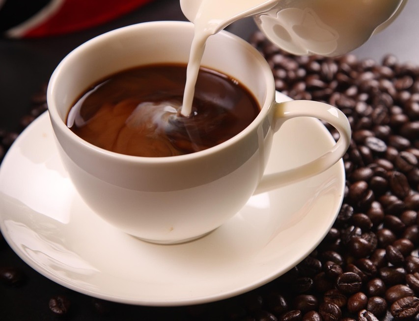

Welcome to Kape Tankulan! Here is our menu! we have a variety of delicious beverages and pastries to satisfy your taste buds.

Photo by: shixugang
Espresso is a strong, concentrated coffee beverage made by forcing steam through ground coffee beans. It is the base for many other coffee drinks and is known for its rich flavor and aroma.
Our drinks offer a variety of flavors and options to suit your taste preferences. That will not only help you stay energized but also provide a delightful experience for your taste buds.
Espresso is a strong, concentrated coffee beverage made by forcing steam through ground coffee beans.
Cold brew is a coffee brewing method that involves steeping coarsely ground coffee beans in cold water for an extended period of time, usually 12 to 24 hours.
Macchiatos are espresso-based drinks that are typically made with a shot of espresso and a small amount of milk, often frothed or steamed.
Lattes are espresso-based drinks that are made with a shot of espresso and steamed milk, often topped with a small amount of foam.
Americanos are espresso-based drinks that are made by diluting a shot of espresso with hot water, resulting in a milder flavor and a larger volume of liquid.
Our Pastries offer a variety of texture and flavors to suit your taste preferences. That will not only help you stay full but also provide a delightful experience for your taste buds.
80 pesos
60 pesos
50 pesos
100 pesos
150 pesos